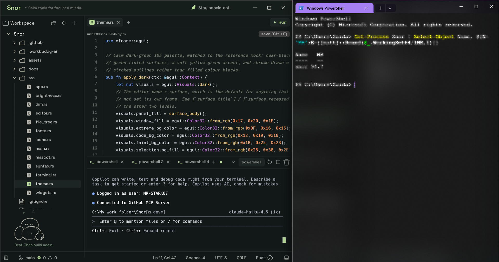

Windows 10 / 11 · 64-bit/v0.8 · open-source launch
A lightweight native workspacefor agent-driven development
Snor is a minimal IDE written in Rust, built around one shift: your job is moving from
typing every line to directing, supervising, and collaborating with coding agents. It
stays near 155 MB while doing it — roughly a sixth of the ~980 MB a mainstream
editor can idle at.
No git integration — use your own clientNo telemetryNo accounts, no cloudNo plugin system to feed
01 Why
Agents are powerful. Managing them is the hard part.
A typical agent workflow means jumping between a terminal, an editor, a file explorer,
git tools, and several agent sessions. On larger projects, supervising agents becomes
as difficult as writing the code itself.
Snor is an experiment in a calmer setup: one focused window where you see your project,
touch your files, and run multiple coding agents side by side — without switching tools
every thirty seconds.
The whole window becomes live terminal panes for supervising agents. Split, focus,
and let them work.
snor · flow mode4 sessions
Four agents supervised at once — pi, opencode, Copilot CLI, and a fourth session.
Terminal
Multi-session, real ConPTY
A genuine powershell.exe -NoLogo -NoProfile with colours and a block
cursor, behind a tab strip. + opens a session, clicking switches,
closing the last tab hides the panel, and Ctrl+Tab brings it back.
Input
Click any shell and type
Enter, arrows, Tab, Backspace and Ctrl+C all reach the shell.
It answers DSR / CPR / DA queries so PSReadLine never blocks.
Explorer
Follows the focused pane
The file list re-roots at the focused terminal's directory. Any folder offers
open terminal here — the fastest way to give each agent its own corner.
Chords
Flow Mode in one keystroke
Ctrl+Shift+F enters Flow Mode,
Ctrl+Shift+H/V splits a pane, and
Alt+arrows move focus between them.
Tree-sitter for rust, json, js and toml, with a keyword fallback for everything else.
A 100 KB tree-sitter cap and a 500 KB large-file guard keep it out of the way.
Find, save, run
In-file find and a Run button
Ctrl+F finds, Enter jumps next and
Shift+Enter previous. Ctrl+S saves, and
Run sends cargo run to the terminal.
File tree
Create, rename, delete
A filesystem watcher keeps the tree honest without a manual refresh, and the
resizable, collapsible explorer toggles on Ctrl+B.
04 Dim Mode
Let long sessions run with the screen dark
Ctrl+Shift+D lowers the physical backlight over WMI,
so an overnight run doesn't light the room. A moon in the status bar shows while it's
active; machines without brightness control get a notice instead.
Reads the current brightness, drops to 10%, and restores it exactly on exit
An overlay card confirms the state — no stale residue on toggle-off
Best-effort restore on shutdown, and it never panics
snor · dim mode10%
DIM MODE ACTIVE — screen at 10%.
05 Memory
Read the number as a peak, not a level
WorkingSet64 counts resident pages, and Windows trims them freely for a
backgrounded window. Measured on one long-lived debug process: 83.8 MB resident,
155.8 MB peak, 147.3 MB commit. The ~155 MB quoted is the peak — commit
is the number that stays put.
snor · memory94.7 MB resident

94.7 MB resident after Windows trimmed the backgrounded window — peak 155.8, commit 147.3.